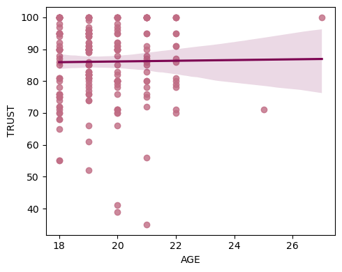
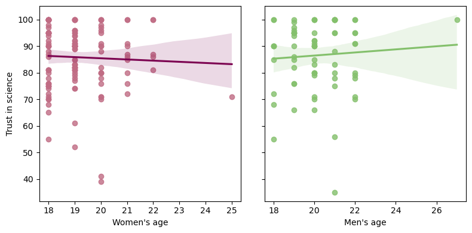
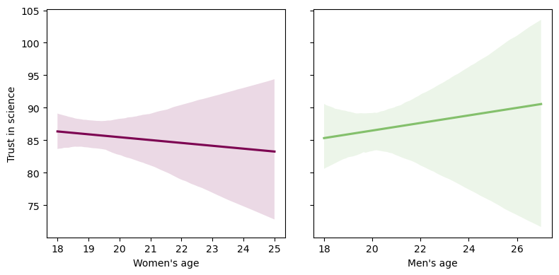

Data Manipulation and Correlations#
Notebook created for Regression in Psychology PSYCH–GA.2229 graduate level course at New York University by Dr. Madalina Vlasceanu
This content is Open Access (free access to information and unrestricted use of electronic resources for everyone).
Sources:
Navarro, D. (2013). Learning statistics with R: https://learningstatisticswithr.com/
Gureckis, 2018 https://teaching.gureckislab.org/fall22/labincp/intro.html
# testing
# import libraries
import pandas as pd
from scipy import stats
from matplotlib import pyplot as plt
import seaborn as sns
import numpy as np
# import data downloaded from https://github.com/mvlasceanu/RegressionData/blob/main/data.xlsx
#df = pd.read_excel('data.xlsx')
# Or you can read the Excel file directly from the URL
url = 'https://github.com/mvlasceanu/RegressionData/raw/main/data.xlsx'
df = pd.read_excel(url)
df.head(2)
| Response ID | GENDER | AGE | PARTY | TRUST | RU1 | RU2 | RU3 | RU4 | ... | Post23 | Post24 | Post25 | Post26 | Post27 | Post28 | Post29 | Post30 | Post31 | Post32 | ||
|---|---|---|---|---|---|---|---|---|---|---|---|---|---|---|---|---|---|---|---|---|---|
| 0 | R_0cj5dsJg2wfpiuJ | 1 | 18 | 1 | 0 | 95 | 4.0 | 26 | 0 | -5 | ... | 69 | 60 | 20 | 58 | 84 | 22 | 42 | 77 | 90 | 71 |
| 1 | R_0rkhLjwWPHHjnTX | 0 | 19 | 2 | 1 | 76 | -5.0 | 16 | 3 | -1 | ... | 58 | 82 | 38 | 61 | 36 | 40 | 62 | 68 | 46 | 43 |
2 rows × 102 columns
Wide to long transformations#
# transform the datafram from wide format to long format using Panda's wide_to_long function
df_long = pd.wide_to_long(df.reset_index(), stubnames=['RU', 'Pre'], i=['Response ID','GENDER'], j='Item').reset_index()
df_long
| Response ID | GENDER | Item | Post31 | Post2 | Post32 | Post30 | Post14 | Post18 | PARTY | ... | TRUST | Post16 | Post27 | Post1 | Post22 | Post7 | Post13 | Post17 | RU | Pre | |
|---|---|---|---|---|---|---|---|---|---|---|---|---|---|---|---|---|---|---|---|---|---|
| 0 | R_0cj5dsJg2wfpiuJ | 1 | 1 | 90 | 90 | 71 | 77 | 80 | 55 | 1 | ... | 95 | 23 | 84 | 87.0 | 57 | 61 | 8 | 64 | 4.0 | 83 |
| 1 | R_0cj5dsJg2wfpiuJ | 1 | 2 | 90 | 90 | 71 | 77 | 80 | 55 | 1 | ... | 95 | 23 | 84 | 87.0 | 57 | 61 | 8 | 64 | 26.0 | 64 |
| 2 | R_0cj5dsJg2wfpiuJ | 1 | 3 | 90 | 90 | 71 | 77 | 80 | 55 | 1 | ... | 95 | 23 | 84 | 87.0 | 57 | 61 | 8 | 64 | 0.0 | 20 |
| 3 | R_0cj5dsJg2wfpiuJ | 1 | 4 | 90 | 90 | 71 | 77 | 80 | 55 | 1 | ... | 95 | 23 | 84 | 87.0 | 57 | 61 | 8 | 64 | -5.0 | 30 |
| 4 | R_0cj5dsJg2wfpiuJ | 1 | 5 | 90 | 90 | 71 | 77 | 80 | 55 | 1 | ... | 95 | 23 | 84 | 87.0 | 57 | 61 | 8 | 64 | 4.0 | 86 |
| ... | ... | ... | ... | ... | ... | ... | ... | ... | ... | ... | ... | ... | ... | ... | ... | ... | ... | ... | ... | ... | ... |
| 6395 | R_ZpYHWVd91u6fjBT | 0 | 28 | 33 | 55 | 67 | 37 | 40 | 38 | 1 | ... | 66 | 56 | 35 | 69.0 | 62 | 68 | 21 | 65 | 23.0 | 32 |
| 6396 | R_ZpYHWVd91u6fjBT | 0 | 29 | 33 | 55 | 67 | 37 | 40 | 38 | 1 | ... | 66 | 56 | 35 | 69.0 | 62 | 68 | 21 | 65 | -24.0 | 0 |
| 6397 | R_ZpYHWVd91u6fjBT | 0 | 30 | 33 | 55 | 67 | 37 | 40 | 38 | 1 | ... | 66 | 56 | 35 | 69.0 | 62 | 68 | 21 | 65 | -20.0 | 17 |
| 6398 | R_ZpYHWVd91u6fjBT | 0 | 31 | 33 | 55 | 67 | 37 | 40 | 38 | 1 | ... | 66 | 56 | 35 | 69.0 | 62 | 68 | 21 | 65 | 36.0 | 69 |
| 6399 | R_ZpYHWVd91u6fjBT | 0 | 32 | 33 | 55 | 67 | 37 | 40 | 38 | 1 | ... | 66 | 56 | 35 | 69.0 | 62 | 68 | 21 | 65 | 1.0 | 68 |
6400 rows × 42 columns
#transform the datafram from wide format to long format using Panda's melt function
df_long_2 = pd.melt(
df.loc[:, ['Response ID', "GENDER", "AGE", "PARTY", "TWITTER", "TRUST", "RU1",'RU2', 'RU3', 'RU4']],
id_vars=['Response ID', "GENDER", "AGE", "PARTY", "TWITTER", "TRUST"],
var_name="Item",
value_name="RU"
)
df_long_2
| Response ID | GENDER | AGE | PARTY | TRUST | Item | RU | ||
|---|---|---|---|---|---|---|---|---|
| 0 | R_0cj5dsJg2wfpiuJ | 1 | 18 | 1 | 0 | 95 | RU1 | 4.0 |
| 1 | R_0rkhLjwWPHHjnTX | 0 | 19 | 2 | 1 | 76 | RU1 | -5.0 |
| 2 | R_10BMNpjhInMfUeO | 1 | 18 | 1 | 1 | 86 | RU1 | -5.0 |
| 3 | R_120iGR6WlLnbZnI | 0 | 22 | 1 | 0 | 95 | RU1 | 23.0 |
| 4 | R_12qW8cDY0bNlId2 | 0 | 19 | 3 | 0 | 76 | RU1 | 18.0 |
| ... | ... | ... | ... | ... | ... | ... | ... | ... |
| 795 | R_xapQxguTwA3Juh3 | 1 | 18 | 1 | 0 | 76 | RU4 | -32.0 |
| 796 | R_XMS13V10vkvYag9 | 1 | 18 | 3 | 0 | 76 | RU4 | -4.0 |
| 797 | R_ykkxJ7f40bzTEaZ | 1 | 19 | 1 | 0 | 89 | RU4 | -13.0 |
| 798 | R_ZDXFN47SOcbCJpv | 0 | 21 | 2 | 0 | 100 | RU4 | 5.0 |
| 799 | R_ZpYHWVd91u6fjBT | 0 | 19 | 1 | 0 | 66 | RU4 | 39.0 |
800 rows × 8 columns
Selecting subsets of your dataframe#
# select only women
df.query('GENDER==1')
| Response ID | GENDER | AGE | PARTY | TRUST | RU1 | RU2 | RU3 | RU4 | ... | Post23 | Post24 | Post25 | Post26 | Post27 | Post28 | Post29 | Post30 | Post31 | Post32 | ||
|---|---|---|---|---|---|---|---|---|---|---|---|---|---|---|---|---|---|---|---|---|---|
| 0 | R_0cj5dsJg2wfpiuJ | 1 | 18 | 1 | 0 | 95 | 4.0 | 26 | 0 | -5 | ... | 69 | 60 | 20 | 58 | 84 | 22 | 42 | 77 | 90 | 71 |
| 2 | R_10BMNpjhInMfUeO | 1 | 18 | 1 | 1 | 86 | -5.0 | -2 | 5 | 5 | ... | 35 | 46 | 39 | 65 | 44 | 42 | 53 | 55 | 45 | 35 |
| 5 | R_1BoktAHwyuomyCl | 1 | 20 | 3 | 0 | 41 | -4.0 | -16 | -4 | -6 | ... | 59 | 30 | 28 | 59 | 30 | 13 | 63 | 72 | 39 | 33 |
| 7 | R_1Cmg1E3Fn2Evh4J | 1 | 19 | 1 | 0 | 96 | 12.0 | 12 | 27 | 5 | ... | 26 | 7 | 35 | 69 | 59 | 14 | 41 | 66 | 57 | 24 |
| 9 | R_1etaEYMiW0ydSuF | 1 | 18 | 1 | 0 | 100 | -1.0 | -2 | -12 | 21 | ... | 25 | 70 | 28 | 50 | 24 | 12 | 71 | 74 | 45 | 67 |
| ... | ... | ... | ... | ... | ... | ... | ... | ... | ... | ... | ... | ... | ... | ... | ... | ... | ... | ... | ... | ... | ... |
| 193 | R_wTYaq1bnIPk7pIJ | 1 | 19 | 3 | 0 | 90 | -3.0 | 1 | 1 | 8 | ... | 50 | 71 | 43 | 82 | 73 | 27 | 18 | 26 | 93 | 22 |
| 194 | R_wZ3U1Md90MfZpa9 | 1 | 19 | 1 | 1 | 90 | 6.0 | 2 | 31 | 1 | ... | 55 | 56 | 29 | 70 | 40 | 31 | 60 | 55 | 57 | 44 |
| 195 | R_xapQxguTwA3Juh3 | 1 | 18 | 1 | 0 | 76 | -13.0 | 3 | 3 | -32 | ... | 56 | 69 | 2 | 68 | 68 | 61 | 71 | 17 | 82 | 27 |
| 196 | R_XMS13V10vkvYag9 | 1 | 18 | 3 | 0 | 76 | -12.0 | 5 | -7 | -4 | ... | 44 | 44 | 26 | 40 | 34 | 37 | 35 | 65 | 44 | 35 |
| 197 | R_ykkxJ7f40bzTEaZ | 1 | 19 | 1 | 0 | 89 | -3.0 | 14 | 14 | -13 | ... | 57 | 23 | 26 | 83 | 44 | 44 | 66 | 35 | 32 | 75 |
129 rows × 102 columns
# select only women's trust in science
df.query('GENDER==1')['TRUST']
0 95
2 86
5 41
7 96
9 100
...
193 90
194 90
195 76
196 76
197 89
Name: TRUST, Length: 129, dtype: int64
# select only women's under 50 trust in science
df.query('GENDER==1 & AGE<50')['TRUST']
0 95
2 86
5 41
7 96
9 100
...
193 90
194 90
195 76
196 76
197 89
Name: TRUST, Length: 129, dtype: int64
# select only women's trust in science and assign it to a new variable
womenTRUST = df.query('GENDER==1')['TRUST']
# select only men's trust in science and assign it to a new variable
menTRUST = df.query('GENDER==0')['TRUST']
Correlations#
# corelate trust in science with age
# Run a Pearson Correlation for continuous variables
stats.pearsonr(df.AGE, df.TRUST)
PearsonRResult(statistic=0.012687557785958224, pvalue=0.8584782150756924)
# Run a Spearman Correlation for rank variables
stats.spearmanr(df.AGE, df.TRUST)
SignificanceResult(statistic=0.0248282977917326, pvalue=0.7271057552670346)
Plots#
# Make a simple regression plot
# Create the figure
fig, ax = plt.subplots(1,1, figsize=(5,4))
# Plot the line
sns.regplot(x=df.AGE, y=df.TRUST, scatter_kws={"color": "#C06C84"}, line_kws={"color":"#7D0552"}, ax=ax)
# Include this command such that all the elements of the plot appear in the figure
plt.tight_layout()
# Save figure
plt.savefig('figure.tif', dpi=300, format="tiff")

# Create the figure with 2 panels that share the y axis
fig, ax = plt.subplots(1,2, figsize=(8,4), sharey=True)
# Plot the line of women's age against their trust in science
sns.regplot(x=df.query('GENDER==1')['AGE'], y=df.query('GENDER==1')['TRUST'], scatter_kws={"color": "#C06C84"}, line_kws={"color":"#7D0552"}, ax=ax[0])
# Plot the line of men's age against their trust in science
sns.regplot(x=df.query('GENDER==0')['AGE'], y=df.query('GENDER==0')['TRUST'], scatter_kws={"color": "#84C06C"}, line_kws={"color":"#84C06C"}, ax=ax[1])
# label the x axis
ax[0].set_xlabel("Women's age")
ax[1].set_xlabel("Men's age")
# label the y axis
ax[0].set_ylabel("Trust in science")
ax[1].set_ylabel(" ")
# Include this command such that all the elements of the plot appear in the figure
plt.tight_layout()
# Save figure
plt.savefig('figure.tif', dpi=300, format="tiff")

Let’s recreate the figure above but remove the scatter dots
# Create the figure with 2 panels that share the y axis
fig, ax = plt.subplots(1,2, figsize=(8,4), sharey=True)
# Plot the line of women's age against their trust in science
sns.regplot(x=df.query('GENDER==1')['AGE'], y=df.query('GENDER==1')['TRUST'], scatter=False, line_kws={"color":"#7D0552"}, ax=ax[0])
# Plot the line of men's age against their trust in science
sns.regplot(x=df.query('GENDER==0')['AGE'], y=df.query('GENDER==0')['TRUST'], scatter=False, line_kws={"color":"#84C06C"}, ax=ax[1])
# label the x axis
ax[0].set_xlabel("Women's age")
ax[1].set_xlabel("Men's age")
# label the y axis
ax[0].set_ylabel("Trust in science")
ax[1].set_ylabel(" ")
# Include this command such that all the elements of the plot appear in the figure
plt.tight_layout()
# Save figure
plt.savefig('figure.tif', dpi=300, format="tiff")
